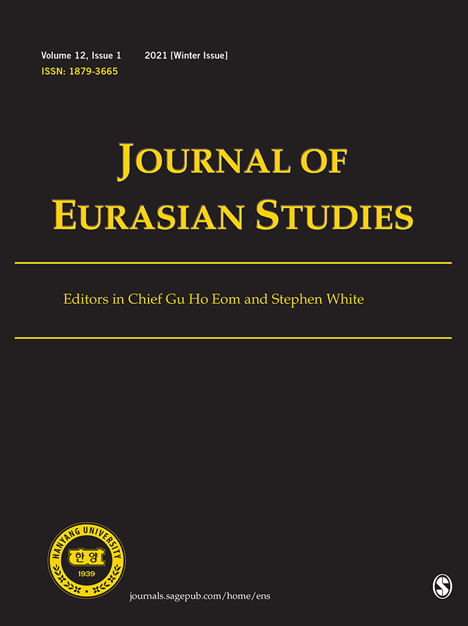
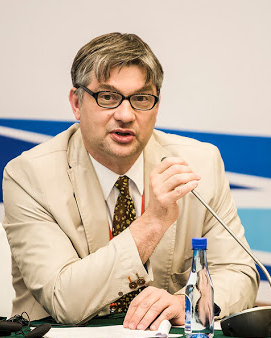
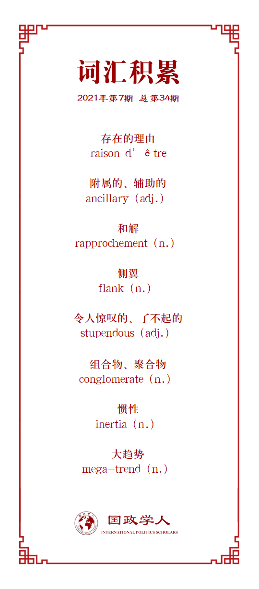

收录于合集

作品简介
【作者】 Alexander Lukin, 俄罗斯国立高等经济大学国际关系教授，主要研究领域为世界经济和国际事务;
Dmitry Novikov, 俄罗斯国立高等经济大学国际关系助理教授，主要研究领域为世界秩序和新区域主义。
【编译】 江若婵（国政学人编译员，伦敦政治经济学院）
【校对】 房宇馨
【审核】 胡可怡
【排版】 石寒冰
【美编 】游钜家
【来源】 Lukin, A. and Novikov, D. (2021) “Sino-Russian rapprochement and Greater Eurasia: From geopolitical pole to international society”, in Journal of Eurasian Studies , 12(1), pp.28-45.
期刊简介

《欧亚研究期刊》( Journal of Eurasian Studies ) 是由韩国汉阳大学亚太研究中心出版的一部经由同行审议，对外开放阅读的期刊，致力于研究遍布甚至跨越欧亚大陆的各种联系纽带。它将欧亚地区广泛地定义为中亚、高加索地区、俄罗斯、乌克兰、摩尔多瓦、土耳其和西南亚。本期刊内容涵盖国内与国际政治、经济发展议题、移民、社会人才交流、环境问题以及科技分享，均对研究当今的欧亚社会具有重要性。跨学科的方法也适用于本刊，许多文章结合了历史、文化、人文学科、人类学、民族学等等，有助于重新理解欧亚空间。

Alexander Lukin
Dmitry Novikov
**中俄和解与大欧亚：从地缘政治的一极到国际社会 ******
Sino-Russian rapprochement and Greater Eurasia: From geopolitical pole to international society
内容提要
如果国际无政府状态不能在全球范围内稳定下来，那么是否至少可以在地区范围内稳定下来呢？给出正面回答的学者通常会提及北大西洋国家。以英国学派 (the English School) 的观点来看，这些国家属于一个国际社会 (international society)。一般认为在西方之外出现这样的社会几乎是不可能的。然而，本文认为在俄罗斯和中国的推动下，这样的国际社会也许已经在欧亚地区出现了。在过去的数年中，这两大强国已经推出了一系列重大举措，旨在发展交通与物流网络，深化欧亚大陆各个地区之间的经济与机构联系。这些举措包括但不限于俄罗斯支持的欧亚经济联盟 (EEU)，以及中国的一带一路倡议。俄罗斯与中国开始共同构建“从加里宁格勒到上海”的安全与经济合作的新平台——大欧亚共同体。基于对这些倡议的地缘政治逻辑的分析，本文认为在一群有着不同政治制度与文化，但是有着共同地缘政治目标的国家之间，正在形成一个崭新的、非西方的国际社会。
文章导读
01
引言
近年来，一种替代性的国际治理体系正逐渐成型，尤其是在地区层面。这让一些学者谈到了新的、非西方的区域主义——倾向于改变西方模式的区域一体化和制度建设，并且与之竞争。俄罗斯与中国可被视为这种趋势的主要推动者。虽然有些学者认为中俄之间对于区域主义以及区域秩序的安排存有异议，但是在过去的几年中俄两国已经投入大量精力来协调它们的区域项目。也许这个过程中最雄心勃勃的部分就是缔造一个大欧亚社会。该倡议及其附属概念呼吁形成一个单一的地缘经济和制度空间，能够囊括至少大半部分欧亚地区，甚至是欧亚大陆全部。中俄两国均对此倡议给予了官方支持。
这个新建立的政治与经济共同体有非常广泛的地缘政治轮廓。这种建设性的合作应基于共同的制度、非正式合作框架和价值观，从而将这种“地缘经济和地缘政治整合”表征为一个新的国际共同体——大欧亚共同体。在这个地理空间建立一个稳定的国际社区必须解决一系列问题：克服中俄矛盾，稳定欧亚大陆中部的国际体系，加快经济增长并确保区域安全。学者和专家就这样一项雄心勃勃的倡议的可持续性与发展前景展开辩论。“乐观主义者们”认为，对于欧亚大陆不同的国家和地区来说，互相加深联系是自然而然的事，俄罗斯和中国应该协调这个过程。根据这种观点，欧亚地区的崛起与整合是不可抵挡的历史趋势，无论外界的地缘政治因素怎样变化都会发生。另一种更悲观（或者更现实）的观点认为大欧亚这个概念本身就是以非正式联盟来促使中俄和解正式化的结果和努力。自从1990年代以来，现实主义评估和地缘政治考量就已经研究了中俄连成一个阵营制衡美国的可能性。从这种观点来看，俄罗斯寻求通过与中国结盟来提高它的地位，而中国则将发展欧亚地区的协议视作创造一个积极的政治与概念框架，使其能够扩大在几乎整个大陆的经济影响力。这是一个“便利轴”，并非一个长期的解决方案。
本文作者认为大欧亚的现象最好由这两种并不互相矛盾的观点共同解释。一方面来说，尽管欧亚大陆两极之间的经济联系在加深，塑造欧亚大陆的举措主要是出于政治和战略考虑，而非经济利益。另一方面，这并不意味着中俄伙伴关系是脆弱的，或者大欧亚共同体不可能形成，或是欠缺经济和政治存在的理由。基于这些考虑，本文的作者试图回答两个关键问题：1.为什么中俄和解促成了这么多大规模倡议？2. 大欧亚能否从一个地缘政治项目转型成一个全面的国际社会？
02
大欧亚共同体：理论解释
认为大欧亚整合可持续的学者们通常是指英国学派理论家定义为国际社区的一种国际关系状态，即：一组国家不仅形成一个系统，还建立对话，就行为的共同准则和制度达成共识，并承认维持这些安排的共同利益。这个概念的模型和灵感一直都是美国和其欧洲盟友在北大西洋地区发展出来的特殊关系，所有的标准、对话、共同规则和机构在发展国家之间的政治关系中发挥了决定性的作用。描述国际社会形成与发展的传统理论包含许多假设，要么否认这样的实体在西方世界以外存在的可能性，要么就假定它几乎是不可能的。然而，如果更仔细一点分析英国学派的理论假设的话，就会发现一个并非西方民主国家的系统也可能形成国际社会。这样的系统并不是非要基于文化统一、共同价值观和其他的非制度性组成部分。根据Hedley Bull (1977) 的说法，是共同利益在国际社会的形成中起了决定性作用，并非政治制度和价值观的相似处，或是文化、语言的密切关系。
那么一个国际社会形成背后的驱动力是什么呢？Bull强调了大国在为国际体系提供特定的规则和制度中所扮演的角色。他认为，共存的重要性使得大国选择稳定国际体系，从而避免无谓的冲突挑战它们在国际等级体系中较高的地位。某种程度上来说，它正式化并因此确保了次要国家的一定地位。我们也认为，外部地缘政治压力的存在，或是国际社会内部存在一定的霸权国家作为领导者，都是国际社会出现的标准条件。这些逻辑可以用来解释大欧亚地区国际社会的出现。学者和专家将欧亚大陆视作一个以无政府状态为标志，充斥着不同力量、权力中心与民族之间的严重分歧的地区，而非一个潜在的合作性区域。他们认为欧亚大陆只能通过一个主要大国的军事与政治扩张来实现统一，而这意味着西方失败，该国崛起为全球主导。
这些地缘政治构想影响了美国与西方对于欧亚的当代战略与学术思想。因此，美国和西方主要的当务之急是防止一个国家，或是联盟，将欧亚地区中非欧洲的地区联合起来反对美国。从现实主义的角度来看，即便是一个对美友好的欧亚国家也不能在该地区获得太多力量：除美国以外任何大国都必须被限制。按照同样的逻辑，大多数分析者认为中俄两国联手并非出于合作的愿望以及推动区域一体化，而是对自己在世界秩序中的地位以及美国统治的不满。这引出了另一个论点，即中俄关系的失衡将加剧，导致俄罗斯承担了一个低级伙伴和卫星国家的角色——如果俄罗斯拒绝这种地位，就会爆发冲突。
我们认为俄罗斯与中国有深刻矛盾的假设是错误的。虽然它们的利益在很多方面确实有所不同，但并非完全矛盾。此外，近年来两国不仅在战略和外交政策层面实现了和解，价值观与特性也变得更为相似。然而，这并没有阻止实力的天平向中国倾斜。不过西方盟国之间也存在着政治经济实力的严重失衡，但它们之间的深度信任和共同的基本价值观使得这种差异并不会导致严重的政治分歧，威胁到它们的团结。这表明中俄和解比西方观察家们通常认为的要更持久。西方对欧亚地区的压力促使俄罗斯、中国和其它欧亚强国寻找新的方式来用更复杂的政治组织联结他们的利益。美国在欧亚大陆侧翼和中部的政策失败决定了大国之间战略分歧的本质，并最终导致了我们今天所见的欧亚大陆的地缘政治整合。
03
欧亚大陆侧翼的危机
从地缘政治的角度来看，美国对欧亚大陆侧翼的政策似乎不仅未能遏制俄罗斯与中国，甚至为中俄和解创造最佳条件。2014年春天，因为乌克兰的事件，美国的政策转向了与俄罗斯对抗的模式。中美关系也以一种更平稳的方式转向了对抗。因此，欧亚大陆两翼（欧洲和亚洲）的安全情况相较于90年代而言大大恶化。正如Stephen Blank (2014) 所说，”如果美国在欧洲和亚洲部署军队的传统目的是威慑和安抚盟友，这项政策堪称惊人的战略失败。”事实上，俄罗斯与中国并不急于形成联盟。俄罗斯先前更重视欧洲- 大西洋国家，中国则更关注太平洋地区——两国外交政策文件记载的优先事项反映了这一事实。总体来说，这段时间中国和俄罗斯的外交政策重心是符合自由主义对于后两极国际体系的解读的：寻求融入新的国际秩序，寻求利益并增加政治权重。
关键问题是美国及其盟友无法找到让俄罗斯和中国适当融入欧亚大陆侧翼的安全与政治秩序的方法。美国的政策普遍有三个问题。首先，它低估了中国和俄罗斯崛起的速度，这两个国家都要求在美国认为的严格单极世界中获得一席之地。其次，冷战的制度遗产和保留旧日联盟的需要使美国政策缺乏灵活性，无法改变与俄罗斯和中国的关系，也无法把它们纳入新现实。如果美国加强与盟友的关系，中国会觉得自己陷入了包围圈；如果美国加强与中国的双边对话，盟国就会担心两国将罔顾他们的利益去做重要的区域决策和全球决策。第三，至少在特朗普当选总统之前，越来越意识形态化的美国外交政策将俄罗斯与中国认定为“不够民主”，为进一步发展双边关系设置了障碍。美国与俄罗斯和中国的关系变成了一个”零和游戏”，这些国家在美国主导的秩序中的参与没有被理解为互惠互利的过程，而被看作华盛顿单方面的胜利——一些专家甚至认为一切参与的目的在于实现政权更迭。
04
欧亚地区的中心：从崩塌到主导
阿富汗战争时期，奥巴马政府在欧亚地区专注于维护必要的基础设施，从而实现快速的军事胜利，并撤出该地区。他们需要借此缔造交通与物流运输的基础设施来销卖阿富汗的产品。由于各种原因，该倡议没有获得足够的支持成为一个区域发展的连贯路线图，或是一个美国可以用来加强其在欧亚地区地位的大型项目：由于其资金限制，美国不想将大量资源用于欧亚地区的“马歇尔计划”。中国主导的更大规模、更为雄心勃勃的一带一路倡议——旨在实现相同目标——事实上在2013年取代了它。情况在2014年显著恶化，当时激进的伊斯兰国恐怖分子控制了伊拉克和叙利亚的大部分地区，生动地展示了美国在缔造一个可持续地区域安全体系方面的无能。此外，由于伊斯兰主义的兴起主要是“阿拉伯之春”的结果，而美国从一开始就是该运动的支持者，所以包括俄罗斯和中国在内的很多国家都认为极端主义的增势和区域的不稳定是美国错误政策的结果。当然，这些事件的真实历史更为复杂。然而，欧亚中部地区的崩溃，以及该地区在2010年代中期所处的困难状况与以下事实相关：美国首先不客气地强行进入该地区，打破旧有的政治和社会结构，然后又抛弃了现在不想要的地盘，让无数国家和人民孤身面对混乱和极端主义的兴起。
美国没有制定一个有吸引力的欧亚中部合作议程，所以仍然非常怀疑并批评所有美国以外的国家参与的欧亚一体化进程。这只会促使欧亚地区联合起来对抗美国，形成地缘政治新的一极。欧亚强国联合的推动力是由美国政策的负面影响激发出来的共同利益，即平衡来自西方不断增长的地缘政治压力，恢复欧亚大陆中部地区的政治稳定性和经济可行性。
05
大欧亚以及“欧亚一极”的形成
俄罗斯与中国的战略联结是欧亚联盟的结构基础，也是其地缘政治潜力的来源。过去的几年中，两国的关系越来越多地被描述为战略伙伴关系，接近于联盟，但没有正式的互相防御的义务。中俄和解的主要政治基础是它们都认为冷战后的国际秩序存在许多缺陷，采取了相似的回应方式，并且对理想未来也有相似的愿景。两国在转变国际秩序方面有两个共同点。一方面，它们都拥有一种多极化的外交政策意识形态，其理想的国际秩序模型是基于Rozman (2014) 所说的“平行身份” (parallel identities)。另一方面，俄罗斯与中国在多极化世界中的利益是基于摆脱单极体系的渴望。这是因为两国认为在一个由美国及其西方盟友主导的世界里不可能实现它们自己的政治经济目标。作为对国际议程拥有独立见解和雄心勃勃战略目标的国家，俄罗斯和中国相信他们可以在由多个权力中心管理的多级环境中更有效地工作，这些权力中心将主要通过联合国的平台就全球问题互相交流。
俄罗斯开始在后苏联地域空间里发展自己的一体化项目，启动了欧亚经济联盟 (Eurasian Economic Union)，囊括了哈萨克斯坦、白俄罗斯、亚美尼亚、吉尔吉斯斯坦等国。这为在后苏联时代保障中亚国家的安全与经济发展提供了制度基础。从俄罗斯的角度来看，这些倡议可以将俄罗斯的领导地位制度化，作为其邻近地区 (near abroad) 安全和经济增长的源泉。中国则在2013年启动了其主要的地缘经济倡议一带一路。主要的政治目标是在欧亚大陆上建立一个友好且安全的环境，一个可靠的，无敌意的邻里关系——鉴于与美国的地缘政治冲突不断加深，这一点尤为重要。
06
作为欧亚强国的俄罗斯
将俄罗斯变为欧亚地区一个独立的权力与世界影响力中心是克里姆林宫的官方政策和大多数俄罗斯外交政策战略专家的主要焦点。俄罗斯政府的主要知识分子呼吁结束“重复且徒劳地尝试融入西方文明”，并预测俄罗斯在未来的100-300年间将采取独立道路。目前尚不清楚俄罗斯是否能实现这一目标。它的军事力量大都与这种愿望相匹配，但它的经济发展明显一直都是滞后的。要成为欧亚地区一个独立的权力中心，俄罗斯的领导层和统治精英必须在至少四个领域大力改变传统的方法。首先，必须真正地理解欧亚地区的重要性，从战略上考虑这个地区，而不是视情况而定地奉行反西方的外交政策，比如通过展示替代举措来给西方施加压力。欧亚地区对俄罗斯的重要性应该是不言而喻的。其次，必须制定一个能够加速经济增长的经济政策，从而加强俄罗斯作为全球政治中心的主张。而这方面的进展不仅是不太大，几乎可以算得上是不存在。第三，要想成为一个独立于中国的影响力中心，俄罗斯必须对中国奉行一种巧妙平衡的政策，既不能疏远这个至关重要的伙伴，也不能让俄罗斯完全依附于它。俄罗斯一直向中国出口原材料，使得国内一些专家担忧本国可能变成中国的原材料附加国——但是如果俄罗斯没有其他产品可以出口，纠正这个问题的可能性就很小了。最后一点，俄罗斯要想成为欧亚地区的一个领导者，该地区的其他国家必须认可这一点。俄罗斯在这方面是有些潜力的。中亚和高加索的大多数国家清楚地认识到俄罗斯是该地区唯一的安全保障。万一遇到严重的恐怖袭击，或是伊斯兰主义者企图夺权，除了俄罗斯以外的任何一个国家都不太可能向当地的世俗政权提供援助。
俄罗斯关于欧亚大陆的想法有很多优势。首先，成为世界政治中独立的一极符合俄罗斯以历史为蓝本对自己在国际事务中的定位。通过聚焦于自己所在的地区并给予更多关注给亚洲，俄罗斯也许能够实现发展其西伯利亚以及远东地区的战略目标，这是它多次宣扬但从未达到的。当然，这并不意味着俄罗斯要关闭面对欧洲的窗口。更有可能的是，俄罗斯正在向平衡这两个领域的方向发展，从一个贫穷的的欧洲表亲转变成欧洲与亚洲的中间人，结合了两大洲的优势，融合了不同的文明。
07
中国与大欧亚
与俄罗斯类似，中国虽然起步稍晚，但也在重新思考它与西方—主要是与美国—的关系。当然，与俄罗斯不一样，中国从来没有费力去成为西方国际体系的一部分，即所谓的“自由世界秩序”。然而，北京并不反对成为既定的全球治理体系和经济体系的一部分，只希望中国能在其中占有与自身实力相匹配的一席之地。当事态发展大体如中国所料时——意思是国家强盛了，但没有走向西方模式——美国领导人得出结论，北京欺骗了他们。结果，美国宣布与中国为敌，针对它采取经济措施不仅是为了“恢复经济正义“，还要强迫中国改变政治道路。中国领导人越发地明白这种对抗是长期的，其真正的原因并不在经济，而在于地缘政治：美国不愿意接受中国的独立，不愿意接受中国代表一种不同且成功的发展模式。正因如此，中国正在准备长期防御，要缔造一种较少受美国影响的经济。在这种情况下，中国迫切需要合作伙伴——主要是俄罗斯，但也包括欧亚国家和非西方的世界。俄罗斯的大欧亚理念出现的时机再好不过了。
中国一位有影响力的俄罗斯专家赵华胜在2018年的一篇文章里对俄罗斯的倡议更为谨慎，因为他“并不清楚大欧亚伙伴关系是否是一个长期战略，或仅仅是俄罗斯的一个过渡战略”。他还怀疑“俄罗斯是否有足够强大的力量来推进大欧亚伙伴关系，因此目前尚不清楚它可以走多远。”然而，据赵说，”推进大欧亚地区的经济，外交和安全合作仍存在合理性和必要性“。他总结道：“大欧亚合作符合中国的国家利益，尤其有利于建设一带一路。”
08
其他的欧亚伙伴
欧亚地区其他国家对大欧亚项目的看法非常积极，但并非所有国家都对此给出了官方立场，有些还需要更多的信息。哈萨克斯坦更关注该项目的经济效益和利润问题，反对任何将其政治化的企图。作为欧亚经济联盟的一员，吉尔吉斯斯坦自然而然地参与了通过连接EEU与一带一路倡议来创建大欧亚这一过程。塔吉克斯坦也将以上海合作组织成员和一带一路积极伙伴的身份参加大欧亚项目。其他上合组织和欧亚经济联盟的成员国以及一带一路的合作伙伴均是如此。乌兹别克斯坦近期对外部世界和广泛的国际一体化倡议越发积极。尽管存在一定的政治矛盾，但所有的这些国家，作为一位历史学家所说的“内欧亚 (Inner Eurasia)”，有着非常相似的历史经验和战略文化，这简化了它们的大欧亚建设。印度作为该地区较大的国家之一，尚未给出有关大欧亚的官方立场。然而，印度专家普遍积极地看待在欧亚大陆与俄罗斯合作的想法——尤其是为了平衡中国日益增长的影响力。
该地区的许多国家要么支持，要么至少积极地看待大欧亚的概念，这其中重要的一个原因就是大欧亚联盟“伞状”的特征，使得其可开放供讨论，同时又不会成为施加区域霸权的工具。
09
今日的大欧亚项目
除了俄罗斯与中国之外的许多国家也为欧亚大陆的基础设施与贸易发展推出了自己的项目，例如日本、韩国、印度和欧盟。现在的主要目标是让这些地区参与者们之间形成一种关系，能够防止各种地缘经济项目之间的竞争，以及为这一领域的政治经济交流制定规则。这与美国的战略目标相矛盾。因此，许多学者将大欧亚的形成理解为一场新冷战中欧亚一极的形成，一方面对抗以美国为首的西方一极，另一方面寻求独立于西方制度与资源的发展模式。
但欧亚共同体的建设还处于早期阶段。在许许多多现存的互相重叠甚至矛盾的倡议中，为大欧亚的发展建立制度框架是一个漫长而艰苦的过程。例如，尽管俄罗斯有兴趣创建一个供自己发展的有利外部环境，但它只是最低程度地参加了多边经济模式，尚未实现欧亚经济联盟的全部潜力。因为EEU主要是关注自己的成员，能成为大欧亚的制度基础的实力有限——正如它限制了俄罗斯推进有利于自己的贸易投资规范的可能性。
有两个主要因素影响着大欧亚一体化进程的动态: (1) 经济——贸易与投资的区域化，围绕着新增长点的物流联系，以及与之有关的综合举措。(2)政治——不同制度形式之间日益增长的竞争，促进着老项目的发展和新项目的出现。与各种整合轨道与国家间组织相关的制度建设过于迅速，导致在欧亚出现了“一碗面条”的现象：一大堆相互关联和相互交叉的项目混在一起。大量的这种制度模式——没有统一的逻辑——削弱了它们的有效性、进一步发展的潜力和政治重要性。鉴于这种情况，在大欧亚和其他多边倡议的框架中制定一个统一的制度发展逻辑变得尤为重要。将大欧亚发展为一个地缘政治与地缘经济的实体并非为了创造一个统一的监管与合作制度——毕竟，每一个以亚太经合组织或其他倡议为基础，并试图这么做的都失败了。相反，它应被设计成为现有的和可能的新格式提供一种统一的共存发展逻辑，用来提高大欧亚制度框架的效率与持久性。
01
结论：从大欧亚的一极到大欧亚共同体？
对中俄伙伴关系脆弱性的批评是有误的。美国对俄罗斯与中国施加的地缘政治压力不可能在一夜之间消失：它是按照自己的逻辑推进的，并获得了明显的惯性。克服它需要各方做出大量持续的努力。这在近期是不大可能的，美国不大可能彻底放弃任何主导全球体系的企图。此外，即使中美俄同时改变政策，大欧亚共同体的概念以及那些促成它的倡议显然不会就此结束。这些项目满足了欧亚大陆中部对于安全、政治稳定、以及经济增长的基本需求。
欧洲-大西洋共同体的例子为欧亚地区可能会出现类似的共同体提供了谨慎乐观的理由。形成欧洲- 大西洋共同体的结构条件和计划中的大欧亚共同体的形成条件某种程度上是类似的。欧洲- 大西洋共同体也是在地缘政治压力下发展起来的——压力来源于当时的苏联和逐渐成形的社会主义阵营。这使得西方需要进行地缘政治经济整合，并在大规模安全系统北大西洋公约组织，以及1992年马斯特里赫特条约的形成中得到体现。欧洲和大西洋的机构面临的另一挑战就是需要分散美国在整个国际社会的巨大力量，避免任何由恐惧驱动的制衡美国霸权的组织。这样的联盟一再导致欧洲的战争——包括由对德国的恐惧引起的两次世界大战。欧亚共同体的形成是大势所趋，也许会解决该地区类似的结构性挑战。美国与两大欧亚强权的地缘政治对抗是大欧亚概念背后的政治驱动力。然而，就像欧洲一体化获得了自己的存在理由并在冷战结束以后存续下来——如果欧亚共同体形成并获得实质性议程——那么也有机会成为一个自我维持的新现实。
译者评述
本文以详细的笔触，深刻分析了“大欧亚共同体”这一概念形成的原因、各方的利益、具体的措施以及未来发展的可能性，是一篇全面的、可读性很强的地缘分析文章。本文的一大学术贡献是关于国际关系英国学派经典的“国际社会”概念的。它打破了西方学术界传统的“国际社会只会存在于欧洲- 大西洋地区”这一偏见，通过更加细致地研究英国学派的学术文献，指出共同的政治制度与价值观只是众多国际社会凝聚力中的一种而已，而共同的地缘政治目标/利益同样也是维持国际社会的纽带。这一点常常被忽略。
本文的另一大学术贡献是关于一个一直困扰着“大欧亚共同体”的一个问题，即它的地缘政治起源是否会影响其长久的存续性？会不会随着地缘政治形势的改变，大欧亚共同体也骤兴骤亡？本文提出了一个新颖且有说服力的观点，地缘政治起源与长久存续性并不存在互相矛盾的关系。只要满足外部地缘压力和内部有强国领导这两个基础条件，再加上随着时间流逝逐渐获得实质性议程，大欧亚共同体完全有可能长期存在，就像当年冷战结束以后，欧洲- 大西洋的联盟也得以存活至今日一样。不过，作者在对比这两个项目的时候忽略了一个小小的不同，即欧洲- 大西洋共同体内部的领导强国只有美国一个，而大欧亚共同体内部领导的强国在近几十年内应该有中国和俄罗斯两个，那这样提供的领导力是否会与前者不一样？会不会出现一山不容二虎的局面？作者在这方面没有进一步分析。
本文的第三大学术贡献是将大欧亚共同体背后的地缘政治博弈分析得极为透彻，指出这本质上是西方与东方的全球主导权之争。作者批评了美国的霸权思维，其不重视其他强国的合理需求，以及一味排除异己的压迫性政策正是如今大欧亚崛起的根源。虽然冷战结束已经数十年，美国的外交政策仍活在冷战时期，所以硬生生地将苏联解体后亲西方的俄罗斯推向了自己的反面，使其更加重视自己的亚洲部分。美国对于中国不肯走西方路线的不忿也让中国明白美国与自己是长期的路线之争，绝非一朝一夕可以更改的，因此也在做打持久战的准备。此外，美国经常借着人权民主之名干预欧亚地区其他小国的事务，却不肯进行动乱后的秩序恢复，导致小国们倒向中俄。这一切都是大欧亚共同体的政治基础。只要这种大环境不变，无论中俄之间有什么矛盾，双方都会压下去，优先考虑来自美国的更大的压力。即使对大欧亚共同体有什么保留性意见，也绝不会拒绝。
本文的第四大学术贡献是指出了大欧亚共同体这一项目中的弱点。首先，俄罗斯应该理解欧亚地区本身的重要性，不要只把它当成反对威胁西方的工具，用完就忘了。这一点角度新颖，很少有人提到。其次，俄罗斯与其担忧在经济上过分依赖北京，还不如首先提高自己的生产力，增加出口产品的数量与质量，否则担忧就是无意义的，不仅没有用，反而会损失大欧亚共同体的实力。更重要的一点是如何处理当下项目中众口难调的局面。随着加入的国家越来越多，利益也变得越发盘根错节，为了不让复杂纷繁的利益冲突危害到项目本身的有效性与潜力，需要制定一个统一的逻辑。
本文有一点没有说明颇为可惜，即为什么用“和解“这个词来形容中俄当下的状态。“和解”代表着中俄之前一定存在一个重大分歧，但是全文都没有提及这个分歧是什么，如何产生的，以及最后是如何化解的。如果对此能有一个更详细的说明，本文的内容就更丰富了。
词汇整理

文章观点不代表本平台观点，本平台评译分享的文章均出于专业学习之用, 不以任何盈利为目的，内容主要呈现对原文的介绍，原文内容请通过各高校购买的数据库自行下载。
好好学习，天天“在看”